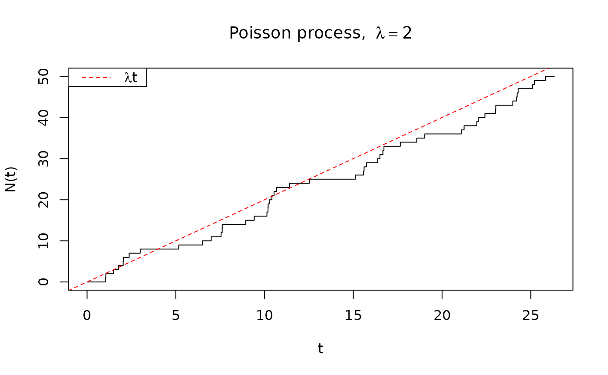

Generete a vector of jump times of a Poisson process
poiss_jump_times.RdSimulates a Poisson process with intensity \(\lambda\) by generating
the jump times \(t_1, t_2, \ldots, t_n\) of the first n jumps.
Inter-arrival times follow the Exponential distribution with parameter
\(\lambda\).
Examples
# Simulate a Poisson process
lambda <- 2
n <- 50
times <- poiss_jump_times(lambda, n)
t_max <- max(times) + 1/lambda # extra padding
steps <- c(0, times, t_max)
N <- 0:length(times) # process value
plot(steps, c(N, tail(N, 1)),
type = "s", # step function
xlab = "t", ylab = "N(t)",
main = expression("Poisson process, " ~ lambda == 2))
abline(a = 0, b = lambda, col = "red", lty = 2)
legend("topleft", legend = expression(lambda * t), col = "red", lty = 2)
